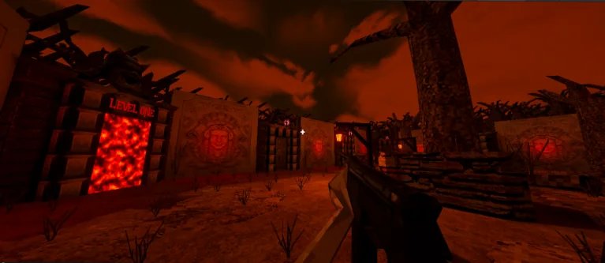
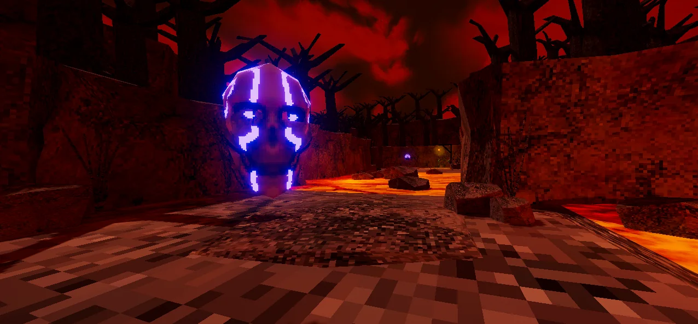
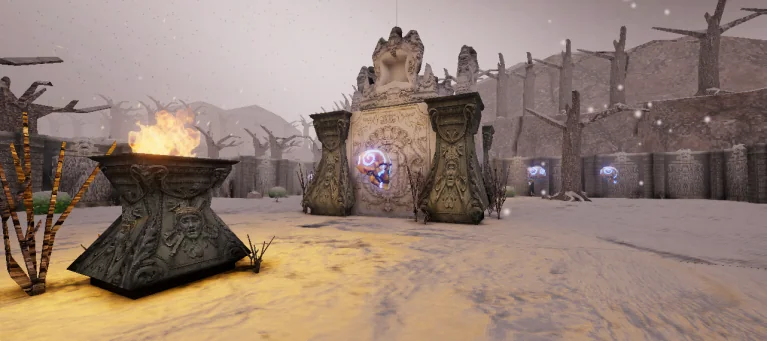

When the sequel became its own game.
Hollowborn began as an idea for a sequel to my game Riverwood before growing into a much larger Quake-inspired FPS. The project expanded into a semi-open structure with progression, a hub, saving, shop, weapons, enemies, and many interconnected systems.


A bigger systems challenge.
The project pushed me into more complex gameplay architecture: movement, weapons, enemies, progression, hub systems, saving, shops, and world structure all had to work together seemlessly to support the vision and goals of the project.
That complexity was valuable, but it also made the project increasingly difficult to maintain and finish as new systems needed to be learne and implimented and old ones needed to be upgraded to support these new mechanics and structures.

Learning when to stop expanding.
Hollowborn ultimately was placed on hold indefinatly. The experience taught me that ambitious features can each sound reasonable in isolation while creating an unsustainable project when combined leading to "feature creep" making the project too large to handle. It remains as a piece of my portfolio to remind myself to keep a confident and level head while creating and designing games.